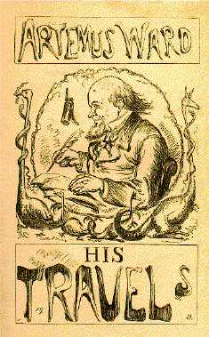

The Tower of London
from Letter to Punch Magazine (1866), reprinted in
Artemus Ward in London, and Other Papers (New York: Carelton, 1867)
|  |
MR. PUNCH, MY DEAR SIR, -- I skurcely need inform you that your excellent Tower is very pop'lar with peple from the agricultooral districks, and it was chiefly them class which I found waitin at the gates the other mornin. I saw at once that the Tower was established on a firm basis. In the entire history of firm basisis I don't find a basis more firmer than this one. "You have no Tower in America?" said a man in the crowd, who had somehow detected my denomination. "Alars! no," I ansered; "we boste of our enterprise and improovements, and yit we are devoid of a Tower. America, oh my onhappy country! thou hast not got no Tower! It's a sweet Boon." The gates opened after awhile, and we all purchist tickets and went into a waitin-room. "My frens," said a pale-faced little man, in black close, "this is a sad day." |
|
"Inasmuch as to how?" I said. "I mean it is sad to think that so many people hve been killed within these gloomy walls. My frens, let us drop a tear!" "No," I said, "you must excuse me. Others may drop one if they feel like it; but as for me, I decline. The early managers of this institootion were a bad lot, and their crimes were trooly orful; but I can't sob for those who died four or five hundred years ago. If they was my own relations I couldn't. It's absurd to shed sobs over things which occurd durin the rain of Henry the Three. Let us be cheerful," I continued. "Look at the festiv Warders, in their red flannil jackets. They are cheerful, and why should it not be thusly with us?" The room where the daggers and pistils and other weppins is kept is interestin. Among this collection of choice cutlery I notist the bow and arrer which those hot-heded old chaps used to conduct battles with. It is quite like the bow and arrer used at this day by certin tribes of American Injuns, and they shoot 'em off with such a excellent precision that I almost sigh'd to be a Injun, when I was in the Rocky Mountain regin. They are a pleasant lot them Injuns. Mr. Cooper and Dr. Catlin have told us of the red man's wonerful eloquence, and I found it so. Our party was stopt on the plains of Utah by a band a Shoshones, whose chief said, "Brothers! the pale-face is welcome. Brothers! the sun is sinkin in the West, and Warra-bucky-she will soon cease speakin. Brothers! the poor red man belongs to a race which is fast becomin extink." He then whooped in a shrill manner, stole all our blankets and whisky, and fled to the primeval forest to conceal his emotions. I will remark here, while on the subjeck of Injuns, that they are in the main a very shaky set, with even less sense than the Fenians, and when I hear philanthropists bewailin the fack that every year "carries the noble red man nearer the settin sun," I simply have to say I'm glad of it, tho' it is rough on the settin sun. They call you by the sweet name of Brother one minit, and the next the scalp you with their Thomashawks. But I wander. Let us return to the Tower. The Warder showd us some instrooments of tortur, such as thumbscrews, throat-collars, etc., statin that these was conkerd from the Spanish Armady, and addin what a crooil peple the Spaniards was in them days -- which elissited from a bright eyed little girl of about twelve summers the remark that she tho't it was rich to talk about the crooilty of the Spaniards usin thumbscrews, when we was in a Tower where so many poor peple's heads had been cut off. This made the Warder stammer and turn red. I was so blessed with the little girl's brightness that I could have kissed the dear child, and I would if she'd been six years older. |
|